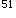

A.特发性血小板减少性紫癜
B.过敏性紫癜
C.急性病毒性肠胃炎
D.急性肾炎
E.系统性红斑狼疮
参考答案：B
A.骨髓检查
B.血小板计数、出血凝血时间
C.血培养
D.网织红细胞计数
E.血小板抗体
A.关节型
B.腹型
C.紫癜型
D.混合型
E.肾型
参考答案：D
A.维生素C
B.保泰松
C.肾上腺皮质激素
D.抗生素
E.消炎痛
参考答案：C
A.白血病细胞浸润
B.联合化疗
C.皮质激素的应用
D.代谢亢进
E.成熟粒细胞减少
参考答案：E
A.鼓励饮水
B.冰袋冷敷
C.静脉注射
D.醇浴
E.使用退热剂
A.局部用普鲁卡因封闭
B.局部冷敷
C.局部热敷
D.局部金黄散外敷
E.抬高患肢
A.严格执行无菌操作原则
B.做好口腔及皮肤护理
C.减少陪客探视
D.监测白细胞计数
E.可下床在楼道走动
A.造血功能衰竭
B.化疗药物反应
C.败血症
D.颅内出血
E.中枢神经系统白血病
A.置患者于平卧位，头偏向一边
B.头部敷热毛巾
C.密切观察意识、瞳孔、生命体征等
D.高流量吸氧
E.迅速建立静脉通路
A.缺铁
B.缺蛋白
C.骨髓受抑制
D.缺维生素B
E.缺叶酸
A.营养不良
B.缺乏成熟中性粒细胞
C.缺氧
D.出血
E.新陈代谢旺盛
A.出血
B.肾衰
D.感染
E.心衰
参考答案：A
A.皮肤紫癜
B.扁桃体充血、肿大
C.胸骨下段压痛
D.心尖区吹风样杂音
E.两肺湿啰音
A.长春新碱-末梢神经炎
B.甲氨蝶呤-口腔黏膜溃疡
C.柔红霉素-心脏毒性
D.泼尼松-类库欣综合征
E.阿糖胞苷-出血性膀胱炎
A.尽量回抽局部渗液
B.外渗局部以0.5%普鲁卡因封闭
C.外渗局部注射氢化可的松注射液
D.外渗局部热敷
A.再生障碍性贫血
B.铁粒幼细胞性贫血
C.缺铁性贫血
D.巨细胞贫血
E.珠蛋白生成障碍性贫血
A.增加营养
B.补充叶酸
C.纠正偏食
D.注射维生素B
E.补充铁剂
A.缺铁性贫血
B.巨幼细胞性贫血
C.再生障碍性贫血
D.溶血性贫血
E.地中海贫血
A.心理社会资料
B.系统体格检查
C.既往史、职业史
D.血象、骨髓象结果
E.主要症状及治疗经过
A.铁剂
B.肾上腺皮质激素
C.雄激素
D.维生素
E.卡巴克洛（安络血）
A.活动无耐力：与贫血有关
B.组织完整性受损：与血小板减少有关
C.知识缺乏：缺乏疾病相关防治知识
D.疼痛、腰背四肢酸痛：与急性溶血有关
E.焦虑：与持续乏力不愈有关
A.告诉患者需坚持治疗使用3～6个月才能判断是否有效
B.向患者说明药物副作用
C.肝功能受损需定期检查肝功能
D.停药后副作用不会消失
E.经常检查注射部位，发现硬块应及时报告，必要时做理疗
A.卧床与下地活动交替
B.便秘者需用泻药和开塞露
C.剧咳者立即使用抗生素、镇咳药
D.保持情绪稳定
E.发现患者剧烈头痛、恶心、呕吐应及时报告医生
A.蛋白质太少
B.缺乏维生素B
C.缺乏叶酸
D.缺乏胃酸
E.储存铁缺乏
A.血红蛋白测定
B.血清铁测定
C.骨髓铁染色消失
D.血清蛋白定量
E.总铁结合力测定
A.面色红润
B.心搏变慢
C.网织红细胞增加
D.血压升高
E.食欲好转
A.皮肤
B.肾脏
C.肺
D.脑
E.肝、脾
A.贫血致抵抗力低下
B.成熟粒细胞缺如
C.选用抗生素不当
D.毒素
E.白血病细胞浸润
A.骨髓穿刺检查
B.血常规检查
C.细胞化学检查
D.免疫学检查
E.基因检查
A.总铁结合力
B.血红蛋白
C.运铁蛋白
D.血清铁
E.骨髓含铁血黄素
A.气体交换受损
B.活动无耐力
C.潜在并发症：脑出血
D.自理缺陷
E.睡眠型态紊乱
A.普通型再障
B.重型再障
C.急性粒细胞缺乏症
D.急性早幼粒细胞白血病
E.败血症合并弥散性血管内凝血
A.骨髓象检查
B.ECT骨成像
C.骨髓细胞染色体检查
D.血培养致病菌+药敏试验
E.凝血功能检查
A.现病史
B.既往病史
C.有害物质接触史
D.生长发育史
E.家庭史
A.B超
B.CT
C.骨髓检查
D.血沉
E.蛋白电泳
A.染色体
B.铬红细胞半衰期寿命
C.核磁共振
D.同位素骨扫描
E.淋巴管造影
A.环磷酰胺
B.白消安（马利兰）
C.羟基脲
D.柔红霉素
E.阿霉素
A.急性早幼粒细胞白血病
B.急性单核细胞白血病
C.急性粒细胞白血病
D.急性红白血病
E.急性淋巴细胞白血病
A.血小板减少
B.异常早幼粒细胞浸润血管壁
C.血小板减少伴功能异常
D.DIC
E.凝血因子缺乏
A.大剂量阿糖胞苷强化治疗
B.单用全反式维A酸化疗
C.DA方案
D.化疗+放疗
E.化疗与全反式维A酸交替治疗
A.出血时间延长
B.凝血时间延长
C.毛细血管脆性试验阳性
D.血块收缩不良
E.骨髓检查颗粒型巨核细胞增多
A.糖皮质激素
B.脾切除
C.血浆置换
D.大剂量丙种球蛋白
E.静脉输注血小板悬液
A.组织完整性受损
B.有受伤的危险
C.有感染的危险
D.知识缺乏
E.潜在并发症：颅内出血
A.长春新碱：末梢神经炎
B.甲氨蝶呤：口腔黏膜溃疡
C.柔红霉素：心脏毒性
D.泼尼松：类库欣综合征
E.阿糖胞苷：出血性膀胱炎
A.铁的摄入量太少
B.缺乏叶酸
C.慢性失血
D.骨髓造血功能障碍
E.胃酸不足，影响铁的吸收
A.输血
B.铁剂治疗
C.病因治疗
D.中医治疗
E.补充营养
A.引起上消化道出血
B.肠黏膜破溃出血
C.应激性溃疡
D.胃肠道小血管破裂出血
E.与肠道内硫化氢生成黑色硫化铁
A.临床表现
B.预后的观察
C.胸部X线检查
D.骨髓象检查
E.治疗效果
A.小细胞低色素性贫血
B.血小板减少
C.网织红细胞低于正常
D.骨髓增生低下
E.粒细胞减少
A.平卧位
B.吸氧
C.头戴冰帽
D.迅速开放静脉
E.头部略低，保证脑部供氧
A.红细胞数
B.白细胞数
C.网织红细胞数
D.血清铁蛋白
E.血小板计数
B.急性粒细胞白血病
C.慢性粒细胞白血病急变期
D.慢性粒细胞白血病加速期
E.慢性粒细胞白血病慢性期
A.束臂试验
B.胸部X线检查
C.染色体检查
D.出凝血时间
E.部分凝血活酶纠正试验
A.化脓性扁桃体炎
B.贫血
C.血小板减少性紫癜
D.再生障碍性贫血
E.白血病
A.血常规
B.骨髓象
C.血涂片
D.肝、肾功能
E.凝血常规
A.焦虑
B.预感性悲哀
C.孤独
D.绝望
E.无能为力
微信关注